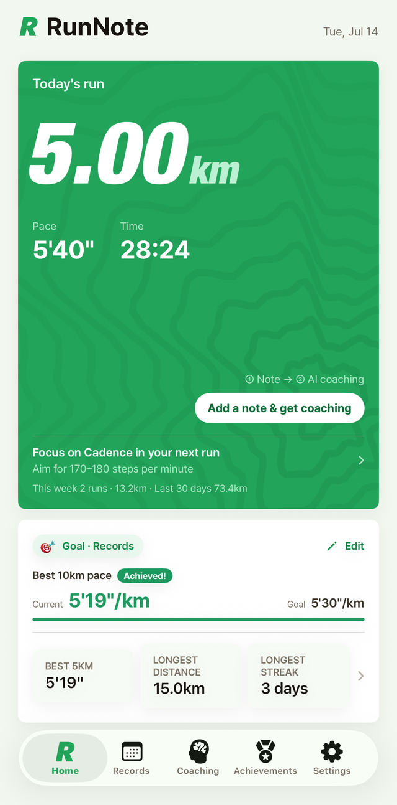
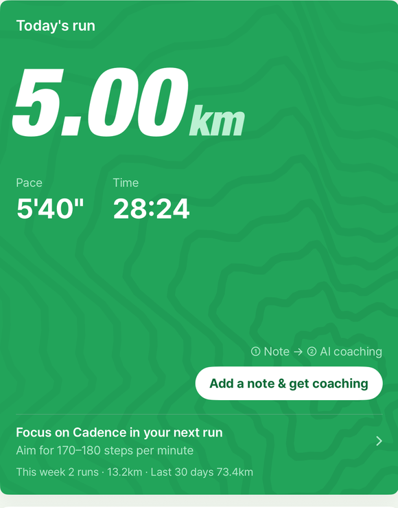
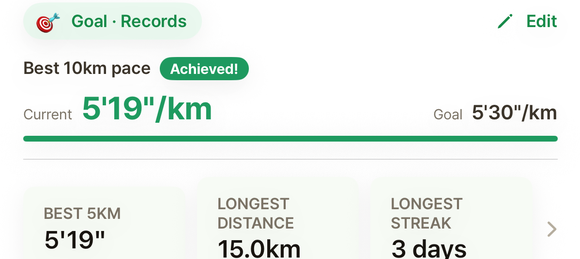
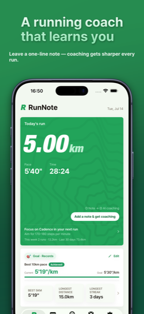
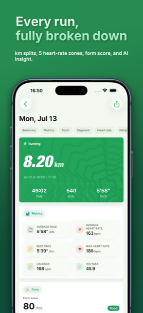
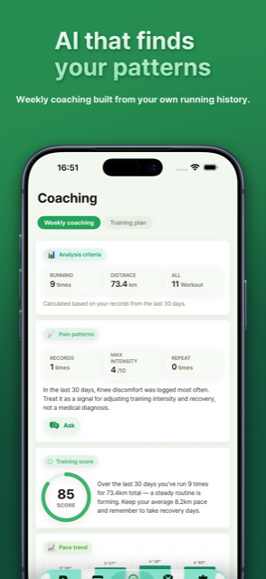
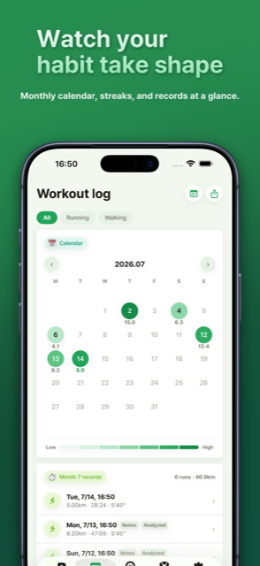

This isn't a live-tracking app. Run with your Watch, open RunNote, and your data's already there. All you add is how you felt — one line. The more you write, the sharper Claude's coaching gets.



Just run with your Apple Watch. HealthKit pulls in distance, pace and heart rate automatically.
One condition emoji, one line. Add where it hurt, if it did. That's it.
Claude reads your history, spots the pattern, and leaves you a question for next time.
Run one gets generic advice. Run ten gets advice that knows your hill-pace pattern. Coaching gets sharper the more you log.




Run with your Watch, open the app — distance, pace and heart rate are already there.
WeatherKit tags every run with the temperature and humidity at the time.
Vertical oscillation, ground contact time, stride length and power, scored.
Zone time distribution, per-km pace, and elevation, all at a glance.
Knee, ankle, whatever hurts — causes, stretches, and when to actually rest.
The more you run, the more the AI remembers about you.
7-day free trial at launch · iPhone & Apple Watch